근거 있는 기후·환경 데이터를 선별하여, 기후변화 연구용역을 수행합니다.
데이터를 사용하기 전에, 데이터의 출처부터 확인합니다.
CONTACT
- goalbangg@naver.com
- GITHUB
- github.com/goalbangg-prog
- 위치
- 서울특별시 광진구 능동
EDUCATION
- 학교
- 한림대학교 졸업 (2023.02)기후변화융합전공 복수전공(2021~) · 사회복지학
- 수료
- 온실가스관리 전문인력 양성과정한국환경공단 · 2022.06–08 · 최우수상
- 수료
- 생성형 AI 마스터 클래스(KDT)동아일보 그룹 · 2026.07–11
EXPERIENCE
- 연구원
- 세종대학교 기후환경융합센터2024.11–2025.07 · IPCC 대응 방안 연구, 기후변화특성화대학원 사업
- 행정실장
- (사)한국기후환경원 총무위원회2024.11–2025.07 · 봉사직 · 연구용역 계약, 세무, 비영리 결산
- 사회복지
- 성동지역아동복지센터2025.07–2026.05 · 아동 사례관리, 아동상담, 운영계획·결과보고서, 공문·기안
기후변화
DATA & DEVELOPMENT
AI & AUTOMATION
COLLABORATION TOOLS
자격·어학
수상·활동
BMW 5시리즈
생애주기 온실가스 분석
BMW 5시리즈의 생애주기 온실가스 배출량을 계산하고,
그 결과를 Scope 3와 회피배출 관점에서 분석했습니다.
(520i 대비)
(2025 상반기 판매분)
회피배출
- 생애주기 경계 설정: 20만 km 주행, 제조부터 폐차까지
- 국가 LCI DB를 사용하여 생애주기 배출량을 산정
- 생애주기 단계를 Scope 3 Cat 1·4·11·12로 배분
- WBCSD 지침으로 회피배출을 따로 산정
- 기간
- 2026.10
- 역할
- 1인 기획·분석·웹 구현
- 스택
- Python · JavaScript · GitHub Pages


EPD 평가계수
398건 점검
KEITI의 2021년 EPD 평가계수를 전수 점검해,
원본 대조가 필요한 값을 찾았습니다.
전수 점검
발견
제품 물발자국
- 4가지 기준으로 398건 × 7개 영향범주 전수 점검
- 오류로 단정하지 않고, 뺀 결과를 따로 비교
- 가상 제품으로 계산 결과에 주는 영향 계산
- 웹 계산 39개 항목을 Python 결과와 검산
- 기간
- 2026.10
- 역할
- 1인 기획·전처리·분석·웹 구현
- 스택
- Python · SciPy · JavaScript · GitHub Pages


기상청 2025년
IPCC 대응 방안 연구
제안서 작성, 나라장터 입찰, 계약, 수행까지
폭넓은 연구행정 실무를 경험했습니다.
- 기술제안서·견적서·사업비 산출내역서 작성
- 착수보고 자료·사업수행상황보고서·회의록 작성
- 국내 IPCC 주저자 인터뷰 진행 · 기상청 블로그 게시
- IPCC 주저자 국외출장 지원
- 발주
- 기상청
- 역할
- 연구원
- 기간
- 2025
- 정성제안서 (기술제안서)
- 정량제안서
- 연구 견적서
- 사업비 산출내역서
- 착수보고회 발표자료
- 사업수행상황보고서
- 회의록
- IPCC 주저자 인터뷰 원고
- 전문가 포럼 운영
- IPCC 주저자 국외출장 지원
- SR Cities 주저자의 LAM-2 회의 출장에 회의와 별도인 두바이 체류 일정이 포함됨
- 기상청 여비 규정상 항공료 지원이 가능한지 다시 검토해야 하는 상황
- 항공권 구매 방식, 일정과 업무 목적의 연관성, 정산 시 문제를 내부에서 검토
- 주저자가 두바이에서 IRENA 담당관과 IPCC 보고서를 협의할 예정임을 확인
- 이를 근거로 업무 관련성을 정리해 기상청과 협의 → 예외 적용, 두바이 체류를 포함한 항공권 전체 지원
광진 환경교육센터 운영 용역
계약서·선금신청서 착수일 불일치 발견
구청 기준대로 수정·재제출
나라장터 선금 수납의뢰 완료
기후변화특성화대학원 사업
연구사업비 집행·예산안 수립
참여율에 따른 학생인건비 관리
분기별 사업수행상황보고서
(사)한국기후환경원 법인행정
연구용역 입찰·계약, MOU 주관
세금계산서·기부금영수증, 소득세 신고
비영리법인 결산자료 작성
K-ETS Compliance
& Cost Optimizer
배출권 구입과 감축기술 개발을 비교하여 최소 이행비용을 찾고,
의사결정 보고서를 자동으로 생성합니다.
이행비용 차이
- 법령·고시·할당계획을 Rule Table로 관리
- KAU·KCU·KOC 적격성 판정, 상쇄 한도 적용
- 감축과 구매를 같은 기준으로 최소비용 조합 계산
- AI는 계산 결과 설명만 → Google Docs 보고서
- 형태
- n8n 워크플로 MVP (가상 기업 데이터)
- 역할
- 1인 설계·구현
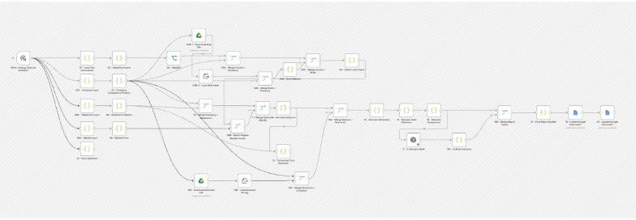
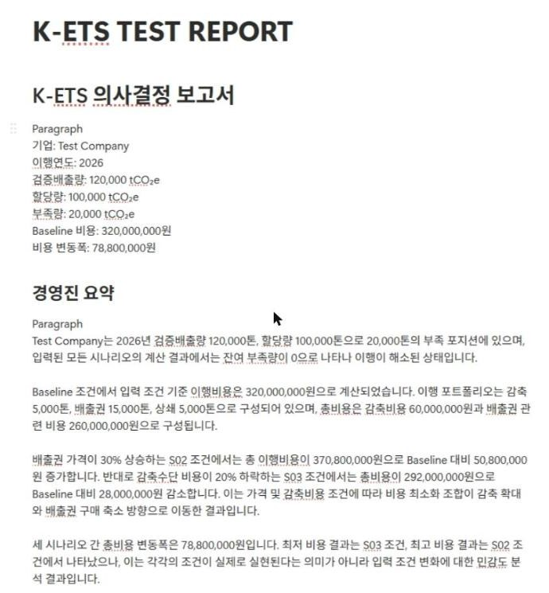
NGMS Manual Copilot
국가온실가스종합관리시스템(NGMS) 사용법을 물으면,
메뉴 경로와 업무 시 주의사항까지 알려주는 도구입니다.
만든 Q&A
Q&A 데이터만 연결
- PDF를 질문·답변·메뉴 경로·출처 페이지로 구조화
- 중복·충돌·출처 불일치 검수 → 178건 제외
- 안내 노드 + 검수 노드 2단계 구성
- 지식 밖 질문은 '확인 불가'로 답하도록 설정
- 역할
- 1인 설계·데이터 구축·구현
- 도구
- Google Opal · Gemini · Excel
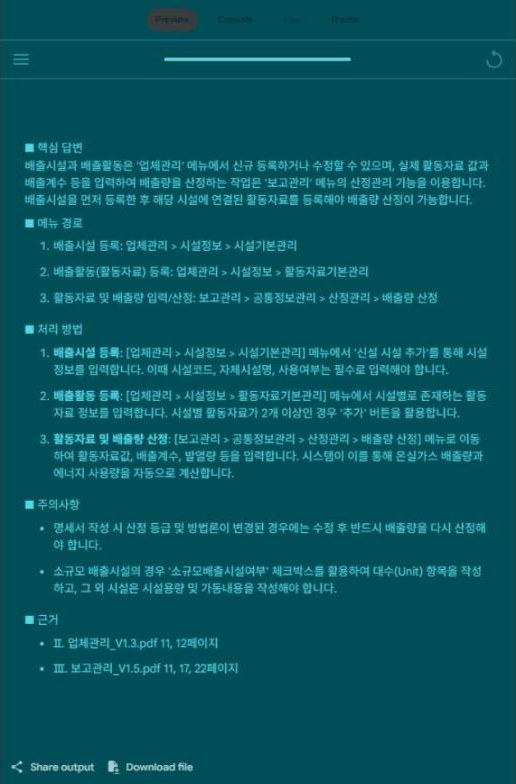
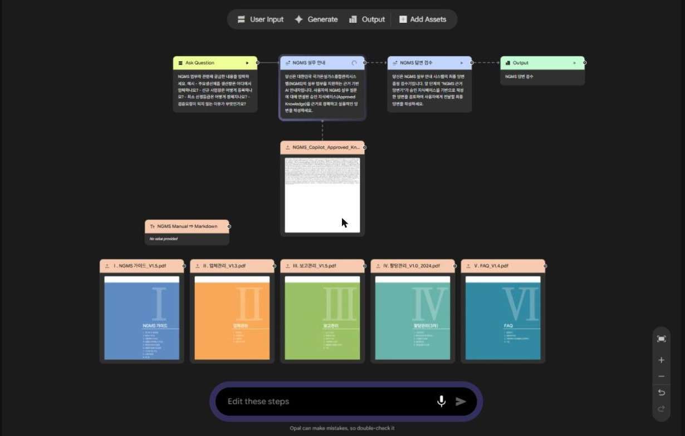
토픽모델링으로 본
국내 기후 연구 동향
학술지 논문 제2저자, 학술대회 포스터 제1저자로 참여했습니다.
6개 주제 도출
7개 주제 도출
- 논문(제2저자) 아이디어 제안, 자료조사, 데이터 전처리, 초록 작성
- 포스터(제1저자) 서지 수집·번역, 불용어·유의어 사전 구성
- NetMiner4로 LDA 토픽모델링 수행·주제 해석
- 논문
- 한국기후변화학회지 16권 3-1호, 2025
- 포스터
- 2025 한국기후변화학회 상반기 학술대회
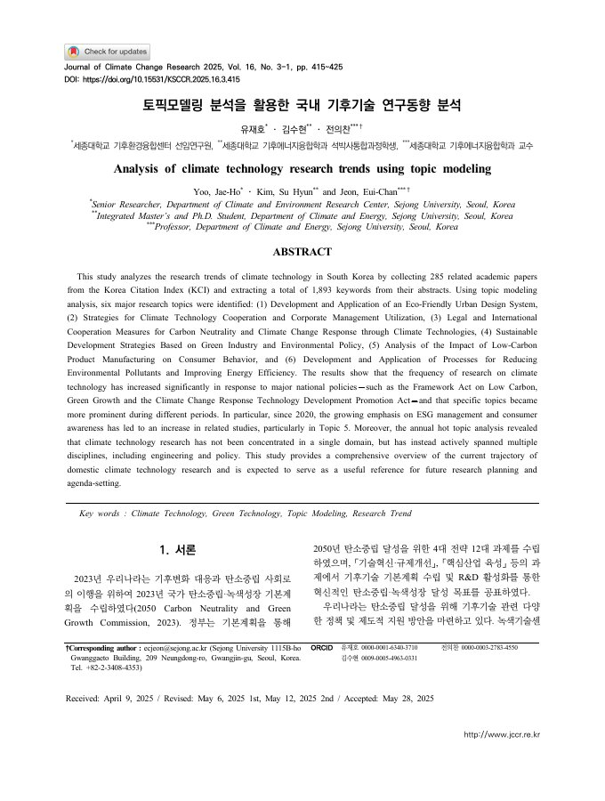
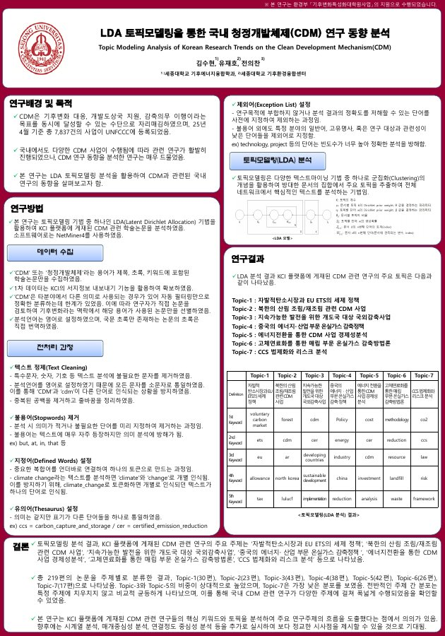
LEAP 에너지·온실가스
모형 실습
기후변화모형연구 수업에서 가정·산업 부문의 에너지 수요 구조를 구성하고 2050년까지 전망했습니다.
- 가구(도시·시골)·산업 부문 수요 구조 구성
- 용도별 보급률·에너지 소비강도 입력
- 2010~2050년 부문별 에너지 수요 전망 확인
- 형태
- 기후변화모형연구 수업 실습
- 도구
- LEAP
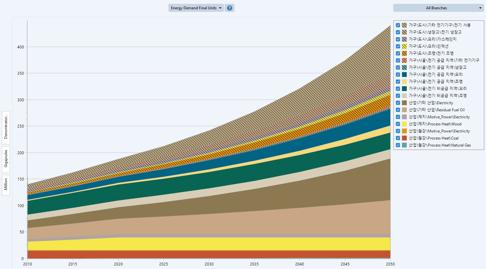
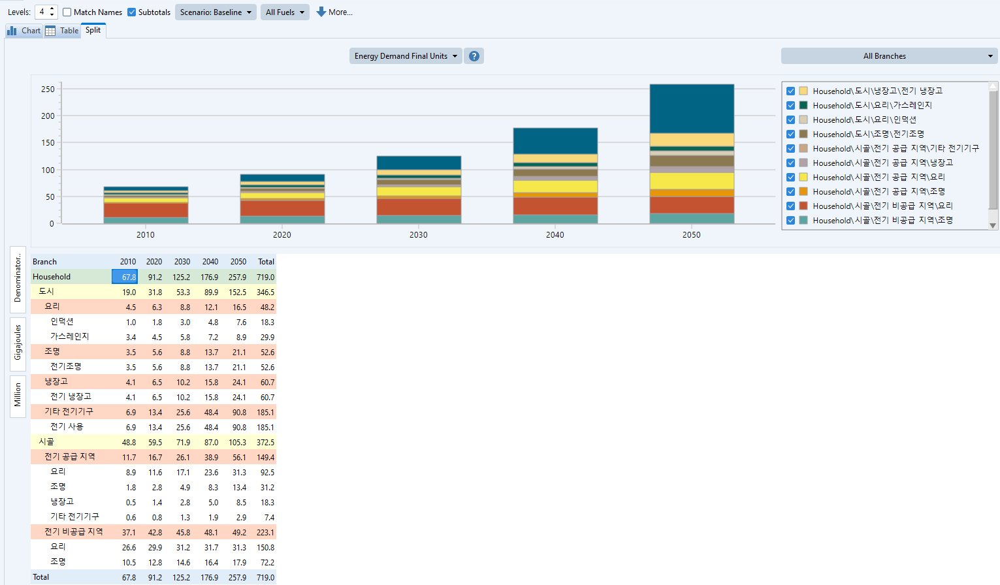
PRESS-CMS
현직 기자 의견을 반영해 만든 기사 작성·검토·출고 시스템입니다. 팀장으로 기획·협업·배포를 맡았고, 2026년 11월 13일 완성 예정입니다.
모두 처리
- 기자 피드백 해석, 편집 화면 개선 방향 제안
- 협업용 GitHub 저장소 구성, Render 배포
- 작업일지 작성, 발표 자료 제작·통합
- 기간
- 2026.09 – 2026.11.13 (완성 예정)
- 역할
- 팀장 · 기획·협업·배포
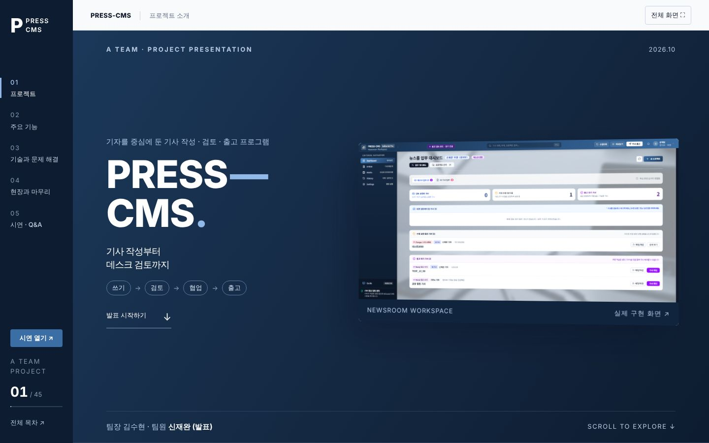
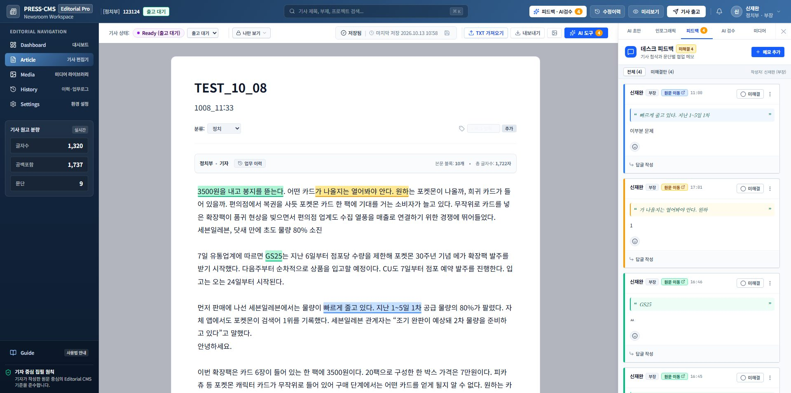
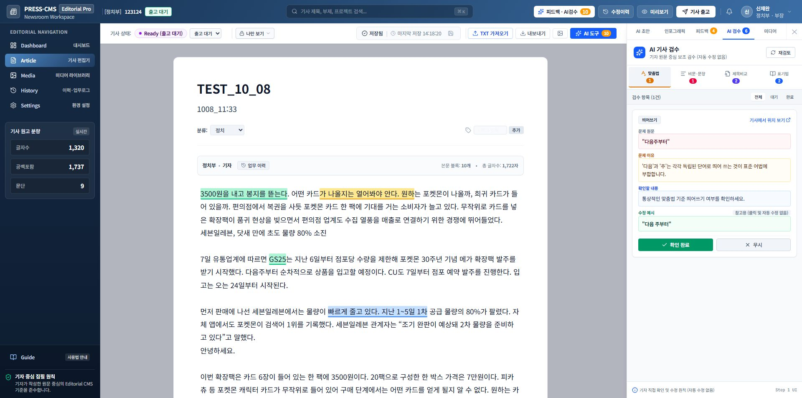
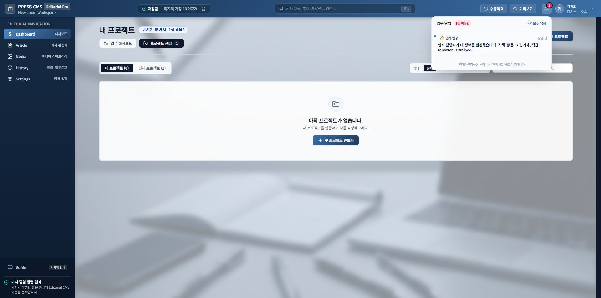
기타 프로젝트
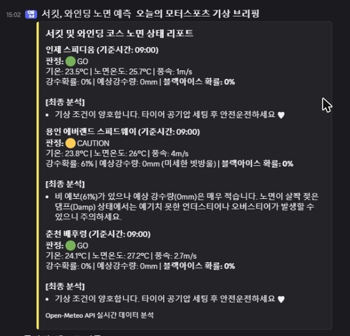

서킷·와인딩 코스 노면 예측 자동화
매일 오전 6시, 코스 3곳의 날씨로 결빙 가능성을 계산해
GO / CAUTION / DON'T GO로 판정하고, 결과를 디스코드로 자동 전송합니다.


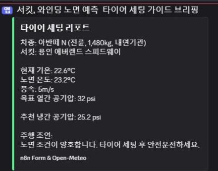
서킷 타이어 공기압 자동화
계산기에서 차량·서킷·목표 공기압을 고르면, 노면 온도로 추천 냉간 공기압을 계산해 디스코드로 자동 전송합니다.
Notion →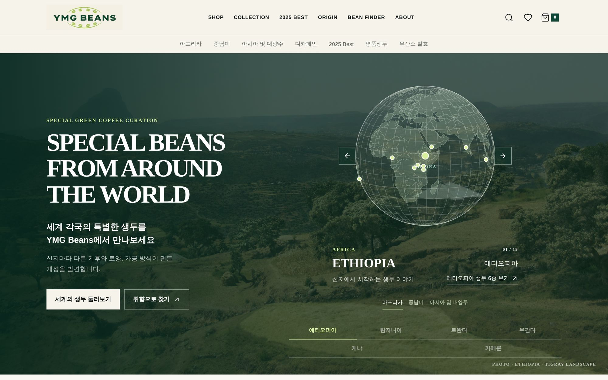
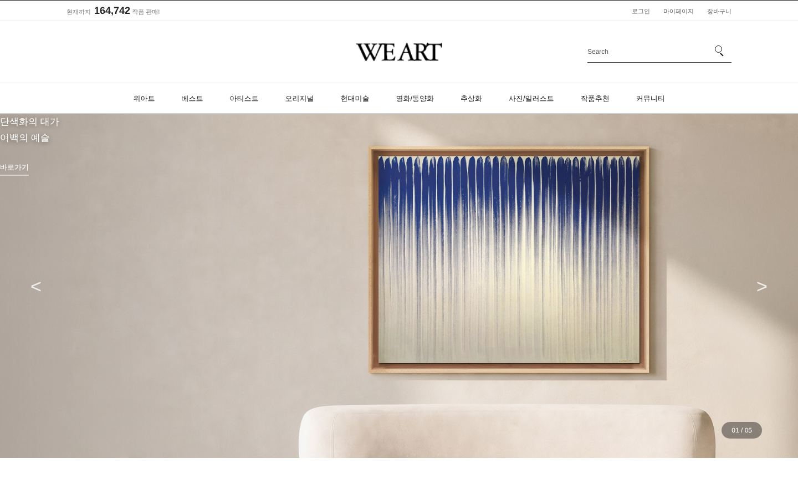
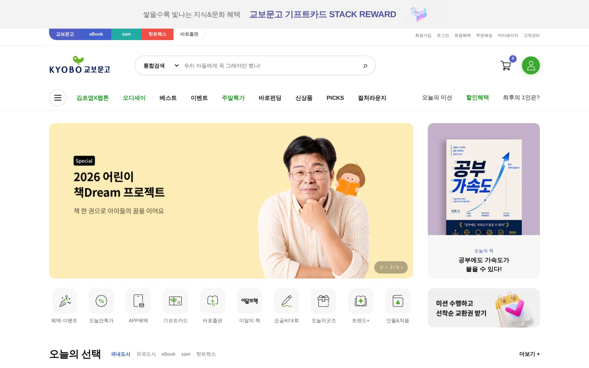